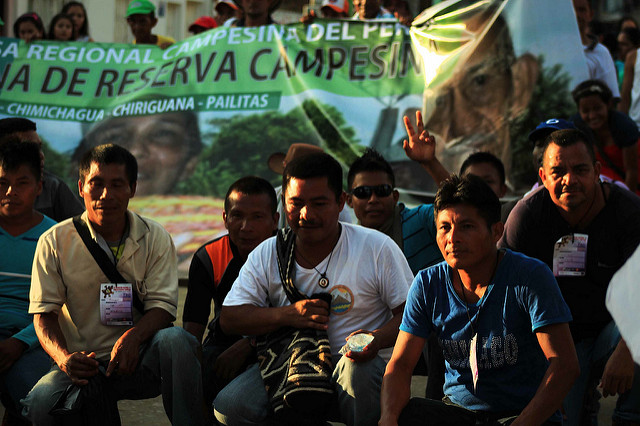
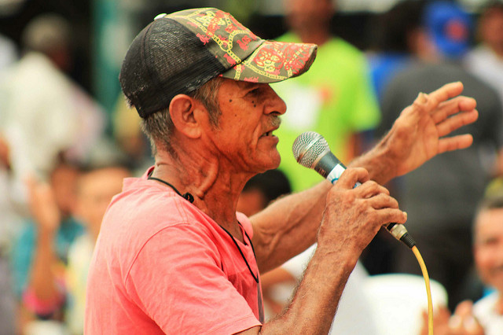

El 90% de los asesinatos a líderes sociales está en la impunidad
El cuerpo sin vida de Edenis Barrera apareció en la madrugada del 19 de marzo en una zona inhóspita de Aguazul, Casanare. Era una líder comunal, miembro de la Defensa Civil y lideraba acciones en su comunidad en el barrio El Porvenir. Los medios registraron su muerte como un feminicidio. Dijeron que la mató un ex novio por celos e incluso, como sucede en muchos de estos casos, dijeron que era su culpa por ser “muy noviera”.
Pero el parte oficial reveló otros detalles, según recuenta el informe Agúzate, de la organización Somos Defensores. Edenis fue torturada, violada, empalada y luego asesinada. Los motivos no se conectan con los de un crimen pasional: fue un asesinato que respondía a sus labores como líder social en su región.
Edenis, al igual que otros defensores sociales, no había denunciado amenazas en su contra. Sus labores en su comunidad se enfocaban en defender proyectos sociales, económicos y ambientales que protegían los intereses de su comunidad.
La firma del Acuerdo de Paz llegó con la promesa del fin de las muertes a líderes sociales en Colombia. Se esperaba que con el cese de hostilidades, la agrupación de guerrilleros en zonas de concentración y la entrega de armas no hubiesen más muertes violentas por la defensa de los derechos humanos en el país.
Sin embargo, la realidad ha sido otra. Desde el pasado mes de noviembre de 2016, cuando el presidente Santos y el líder guerrillero Rodrigo Londoño Echeverri, alias ‘Timochenko’ firmaron el acuerdo final de Paz, en Colombia han sido asesinados, como Edenis, 120 líderes sociales.
La cifra estremece más si se entiende que en casi un año, cada tres días un líder social perdió la vida. Las víctimas están en 23 de los 32 departamentos del país, según los datos recolectados por Datasketch a partir del análisis de noticias y de bases de datos de organizaciones como Somos Defensores.
El departamento con más víctimas es el Cauca, con 34 defensores asesinados, duplicando los casos de cualquier otra región en el país. Le sigue Antioquia con 14 víctimas, Nariño (10) y Valle del Cauca (10). La crueldad no discrimina: hay exconcejales, indígenas Awá, campesinos e incluso líderes LGBTI.
Número de víctimas por departamento
Fuente: Elaboración propia
Sin embargo, la violencia no está en las grandes ciudades sino en los municipios y áreas rurales. El caso más emblemático es el de Corinto (Cauca) y Sucre (Sucre), en donde han sido asesinadas 5 personas, respectivamente. Le siguen áreas como Tumaco (Nariño) y Puerto Libertador (Córdoba), con 4 víctimas cada uno.
“Es muy apresurado y muy aventurado decir qué es lo que está pasando porque hay un proceso de desmovilización de muchos actores y muchas violencias. En medio de esto vemos que están pululando actores que todavía no terminamos de conocer en medio del nuevo panorama”, afirma Carlos Mario Perea, profesor e investigador del Instituto de Estudios Políticos y Relaciones Internacionales (IEPRI) de la Universidad Nacional.
Estos territorios están en áreas en las que hay siembra de cultivos ilícitos, minería ilegal y presencia de grupos armados al margen de la Ley. Para Perea esto no es coincidencia: son factores que aumentan el riesgo para quienes trabajan por los derechos humanos.
A esto se suma que, en muchos casos, los defensores tienen conexiones con circuitos de ilegalidad, como sucede en Tumaco. “Allí hay líderes cocaleros que no son narcotraficantes pero que están involucrados en este panorama de ilegalidad y que han sido asesinados”, explica Carlos Guevara, miembro del programa Somos Defensores.
“Ellos quieren el derecho al trabajo, porque les es más rentable, pero su vida se ve inmersa en muchos tipos de violencia que hace muy difícil rastrear estos riesgos”, agrega.
De hecho, la víctima más reciente en el país es José Jair Cortés, líder y vocero comunitario en Tumaco y que venía denunciando la situación de violencia a que está sometida la población por distintos grupos armados.
No es claro quién está matando a los defensores en Colombia, aunque es claro para quienes estudian el fenómeno que hay una actividad sistemática contra ellos. Todos estos asesinatos están siendo investigados por el CTI de la Fiscalía, pero son pocos los casos que tienen condenas. Somos Defensores, Marcha Patriótica y otros movimientos civiles consideran que hay una persecución real y el Estado se está demorando en reconocerlo y tomar medidas.
"El Estado tiene toda la responsabilidad de esas muertes"
En Colombia no hay leyes que aborden, regulen o decreten medidas para la protección de los líderes sociales en el país. Sin embargo, existen una serie de sentencias y decretos que tratan de motivar a las organizaciones estatales a tomar cartas en el asunto.
En concreto, son la Defensoría del Pueblo, la Unidad Nacional de Protección (UNP) y la Procuraduría General de la Nación las que velan por el bienestar de los líderes sociales en el país.
Cuando un líder social denuncia que su vida está en riesgo ante la Defensoría o la UNP, se empieza un proceso de investigación para analizar la condición del denunciante y la veracidad de sus temores. Si en efecto se prueba que hay un riesgo para la vida de la persona, se implementan “inmediatamente” medidas que aseguren su protección.
Sin embargo, para Carlos Guevara es evidente que en la práctica la protección de la UNP se ve afectada por “la palanca” que pueda tener un líder social. El proceso, sin hacer llamadas o buscar intermediarios, puede tomar mucho tiempo y no llegar a concretarse.
“Los defensores se enfrentan al problema para proteger su vida pero a la vez la de sus familias, sobre las que recaen la mayoría de las amenazas”, explica Guevara quien agrega que esto hace que se generen una lluvia de denuncias que “no hay Estado que tenga la consistencia para recogerlas”.
En ese sentido, la solución estaría en la prevención de dichas situaciones. Para ello, la Defensoría ha implementado el sistema de Alertas Tempranas, que permite monitorear y advertir sobre las situaciones de riesgo de la población civil por los efectos del conflicto armado interno y promover la acción de prevención humanitaria.
Esta metodología le permite a los investigadores y a las autoridades medir el escenario de riesgo en un tiempo definido con unos indicadores claros, arrojando informes muy precisos sobre la realidad colombiana.
Un ejemplo de ello es el Informe 010 de 2017, en el que se generan alertas a 300 organizaciones advertidas y más de cien municipios. Cuando se cruzan los datos del informe con la realidad, se ve cómo al menos el 70% de los asesinatos se dieron en esas zonas de riesgo.
“Es como si no se hubiera hecho nada”, denuncia Guevara. Para este investigador y activista, que trabajó en la Procuraduría en estos temas, el problema está en que “históricamente se ha engavetado esos informes porque los costos políticos de poder asumir eso son muy altos”.
La razón para él radica en que tomar cartas sobre el asunto implica reconocer un asunto de Estado que tiene raíces en la negligencia para actuar.
“Si el Estado revisa uno a uno estos casos va a tener que reconocer que durante años sus propios organismos le advirtieron de que iban a matar a estas personas y no hizo nada para evitarlo sino que ha dejado en la cochina calle a Colombia entera”, denuncia Guevara.
“Las alertas tempranas sirven, pero el Estado las está ignorando. Y luego hay una burocracia, una tramitología eterna frente a estas realidades que hace que no haya resultados”, agrega Gloria Pinilla, periodista e investigadora en estos temas. “¿El resultado? Tenemos una impunidad del 90% ante estos asesinatos y una violencia que no arrecia”, concluye Pinilla.
La ONG Somos Defensores asegura en su informe “Contra las cuerdas” que ni al Gobierno ni a la Fiscalía les interesa establecer un sistema propio para esclarecer el número de líderes asesinados, las presuntas motivaciones y, una vez investigado y condenado el crimen, los victimarios. Esto preocupa especialmente cuando quienes están muriendo son los líderes que ayudarían a implementar el Acuerdo de Paz en las regiones.
Ante este panorama, son los activistas los que han tomado cartas en el asunto denunciando estas muertes y exigiendo que no queden en la impunidad. El panorama no es esperanzador, pero la presión ha hecho que el Estado empiece a ver el problema como algo más que un “caso aislado”. Si quieres sumarte a estas iniciativas, puedes hacerlo firmando esta alerta.
Todas las imágenes mostradas en este artículo son propiedad del sitio web https://avarchives.icrc.org/